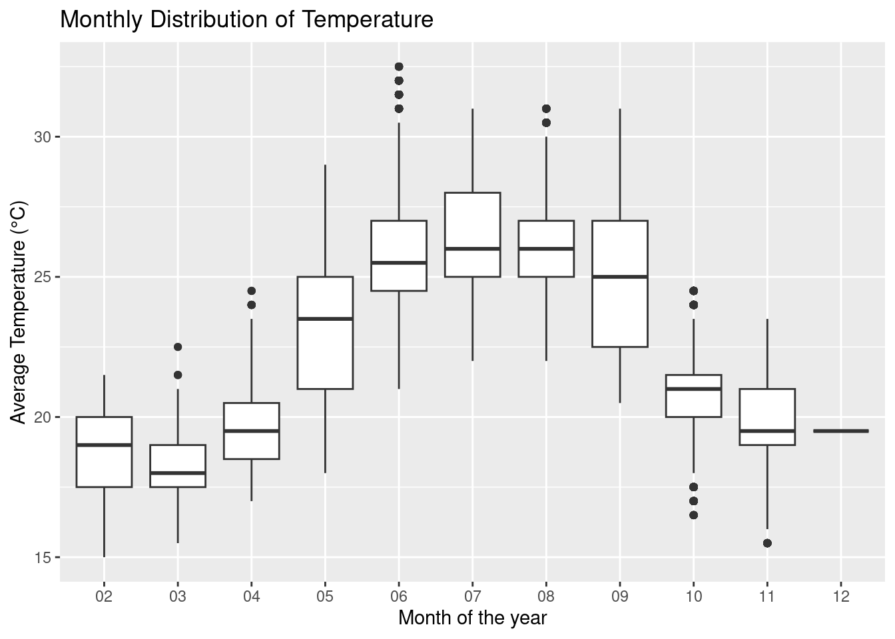
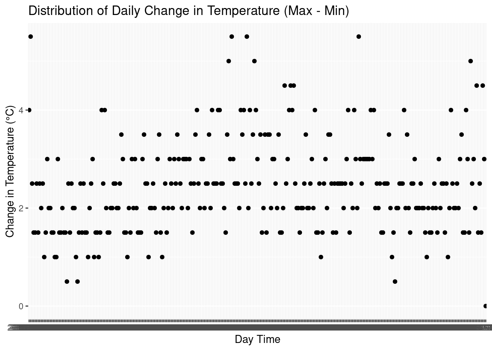

Split the datetime column to filter with different through time variable
data2 <-separate(file, col = datetime, into =c("Date", "Time"), sep =" ")data <-separate(data2, col = Date, into =c("Year", "Month", "Day"), sep ="-")
Basic descriptive statistic
data |>summary()
Year Month Day Time
Length:24394 Length:24394 Length:24394 Length:24394
Class :character Class :character Class :character Class :character
Mode :character Mode :character Mode :character Mode :character
temp_wew rh
Min. :15.00 Min. :30.40
1st Qu.:20.00 1st Qu.:70.50
Median :21.50 Median :85.00
Mean :22.52 Mean :81.07
3rd Qu.:25.50 3rd Qu.:94.20
Max. :32.50 Max. :99.90
NA's :1583
The Colors represents different months, starting from Feb to Dec. There is trend showing a bell distribution. However, some months (summer) appear to experience higher temperature above 23, while some are below.
For better visualization The monthly average temperature over the year, signify a bell shape.
data |>group_by(Month) |>summarise(AverageT =mean(temp_wew), AverageH =mean(rh, na.rm =TRUE)) |>ggplot(aes(x = Month,y =AverageT, group =1)) +geom_line(colour ="blue") +geom_point()
BoxPlot emphasis on the bell shape and the means of monthly temperature. There is very few data available for Dec
data |>ggplot(aes(y = temp_wew, x = Month))+geom_boxplot()

Humidty Distribuion indicating different month of the year
file |>ggplot(aes(x= datetime, y = rh, colour = month)) +geom_point()
Warning: Removed 1583 rows containing missing values or values outside the scale range
(`geom_point()`).
For Humidity, the pattern is different.. higher humidity towards the end of the year and higher variance at the mid months.
data |>group_by(Month) |>summarise(AverageT =mean(temp_wew), AverageH =mean(rh, na.rm =TRUE)) |>ggplot(aes(x = Month,y =AverageH, group =1)) +geom_line(colour ="green") +geom_point()
Plotting the mean of the distribution, it shows increasing trend of humidity.
data |>ggplot(aes(y = rh, x = Month))+geom_boxplot()
Warning: Removed 1583 rows containing non-finite outside the scale range
(`stat_boxplot()`).
The box_plot emphasis the increasing trends of the rh mean over the year.
Distribution during the day (Hourly)
The average hourly temperature of the day, shows rising and falling pattern Temperature decreasing from early hour(00:00) and to lowest temperature at 06:00 and beginning to rise from that hour to the highest temperature at region between 16-19:00 and after which it started to decrease again.
Hour humidity districution of the day reveal a U shape. with the highest rh at around 6:00 and lowest around 16:00 of the day. This is opposite to temperature distributuion
The above graph represent, daily max and minimum temperature.Both follow the same trends. Red points are the maximum temperature of the day and the blue points are the minimum
data2 |>group_by(Date) |>summarise(Tmax =max(temp_wew), Tmin =min(temp_wew)) |>ggplot() +geom_point(aes(x= Date,y = Tmax), color ="red") +geom_point(aes(x= Date,y = Tmin), color ="blue")
The above graph represent, daily max and minimum humidity. No interesting pattern, months between the year experience varying rh, low and high, unlike the extreme months with higher rh. Red points are the maximum temperature of the day and the blue points are the minimum
data2 |>group_by(Date) |>summarise(Hmax =max(rh), Hmin =min(rh)) |>ggplot() +geom_point(aes(x= Date,y = Hmax), color ="red") +geom_point(aes(x= Date,y = Hmin, group =1), color ="blue")
Warning: Removed 71 rows containing missing values or values outside the scale range
(`geom_point()`).
Removed 71 rows containing missing values or values outside the scale range
(`geom_point()`).
Daily change (Hmax-Hmin) in temperature over the period.
data2 |>group_by(Date) |>summarise(ddT =max(temp_wew)-min(temp_wew), ddH =max(rh)-min(rh)) |>ggplot(aes(x= Date, y = ddT, group =1)) +geom_point()

Daily change (Tmax-Tmin) in humidity over the period. The pattern is like a bell-shape, this explain the differences in the rh variation, with higher var situated at the middle months showing a higher daily rh changes, than the left and right rea/extreme months
data2 |>group_by(Date) |>summarise(ddT =max(temp_wew)-min(temp_wew), ddH =max(rh)-min(rh)) |>ggplot(aes(x= Date, y = ddH, group =1)) +geom_point()
Warning: Removed 71 rows containing missing values or values outside the scale range
(`geom_point()`).